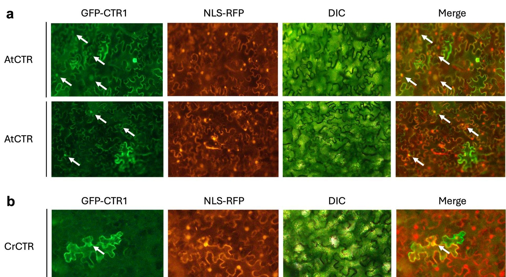
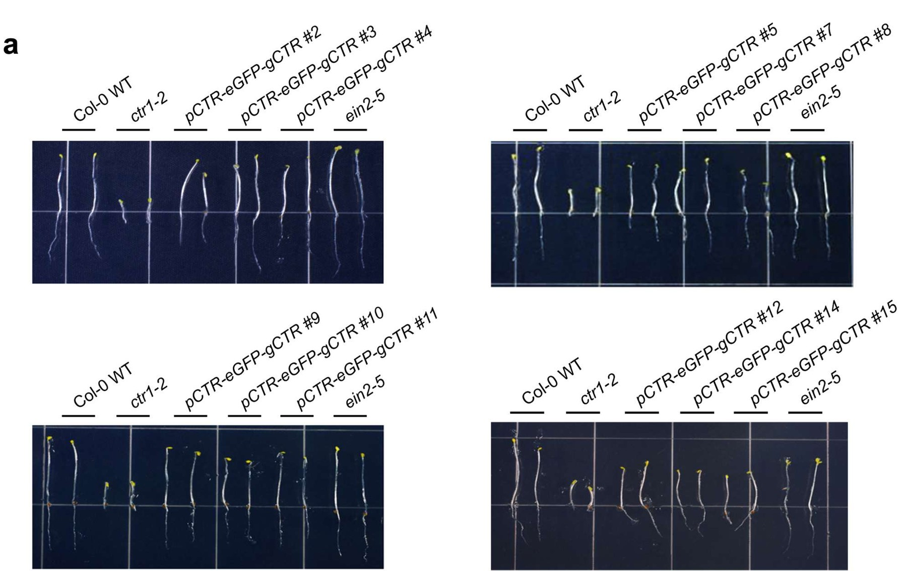
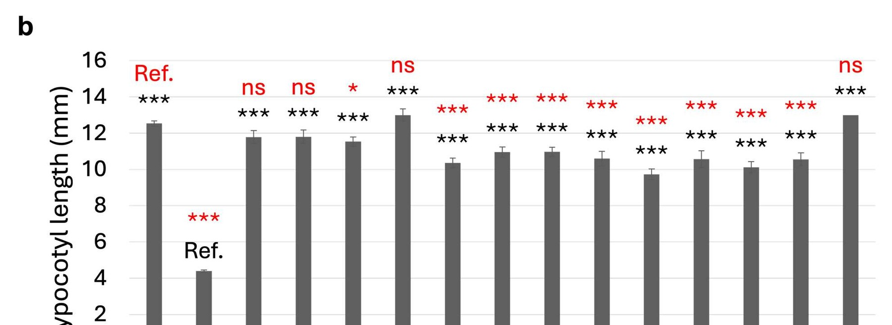
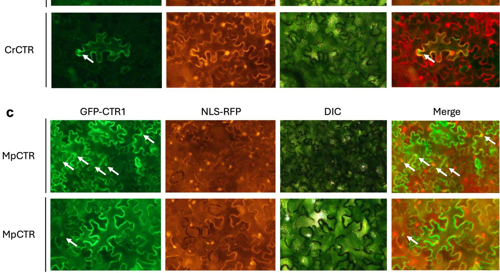
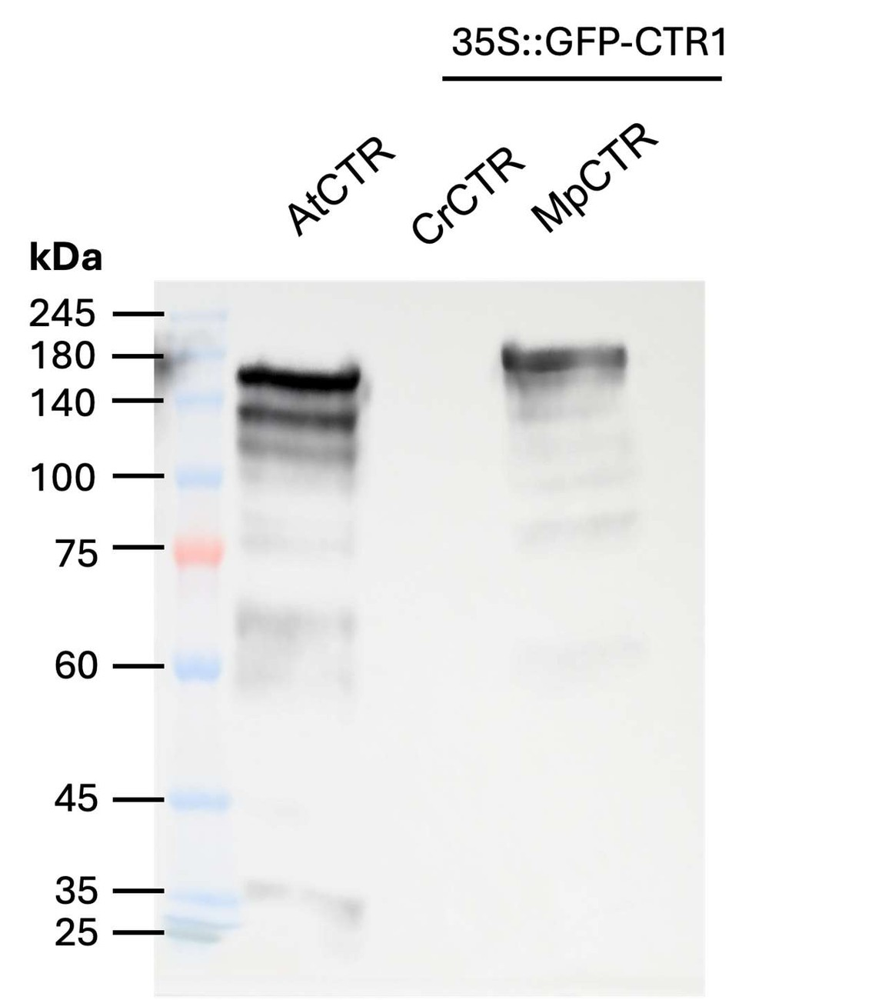

Evolutionary Conservation of CTR1 Functions in Ethylene Signaling Across Land Plants
A team research project at Ghent University’s Plant Biotechnology Research Center combining genetics, phenotyping, microscopy and protein analysis.

Is CTR1’s dual signaling behavior evolutionarily conserved?
The project examined whether the function and intracellular localization of CTR1 homologs are conserved across land-plant lineages, rather than being a feature observed only in Arabidopsis thaliana.
- Arabidopsis complementation
- Herbicide segregation
- Hypocotyl phenotyping
- Agroinfiltration
- GFP / NLS-RFP microscopy
- SDS-PAGE
- Western blot
- R / ImageJ
1 · Functional complementation
T2 complementation lines were evaluated using herbicide-resistance segregation and dark-grown hypocotyl phenotypes. Several lines approached the expected 3:1 pattern, and quantitative hypocotyl analysis showed recovery relative to the ctr1-2 mutant.


2 · Subcellular localization
GFP-tagged AtCTR, CrCTR and MpCTR homologs were transiently expressed in Nicotiana benthamiana. Signals were assessed against an NLS-RFP nuclear marker; multiple GFP signals appeared near or partially overlapping with the nuclear marker, providing preliminary evidence of nuclear-associated localization.

3 · Protein-level validation
Western blotting detected clear upper bands for AtCTR and MpCTR in the expected high-molecular-weight region, while CrCTR did not produce a clear construct-specific band under the conditions used.

Limitations & next steps
Future work would strengthen the complementation system with stable homozygous lines, optimize ER-marker co-localization and improve detection of low-abundance proteins—especially CrCTR—before drawing stronger conclusions about conserved dual function.